Public Access (formerly Langley Research Center)Turbulence Modeling Resource |
The Menter Shear Stress Transport Turbulence Model
This web page gives detailed information
on the equations for various forms of the
Menter shear stress transport (SST) turbulence model.
All forms of the model given on this page are linear eddy viscosity models.
Linear models use the Boussinesq assumption for the constitutive relation:
Unless otherwise stated, for compressible flow with heat transfer this model is implemented as described on the page
Implementing Turbulence Models into the Compressible RANS Equations, with perfect gas
assumed and Pr = 0.72, Prt = 0.90, and Sutherland's law for dynamic viscosity.
Return to: Turbulence Modeling Resource Home Page The first version listed (SST) is considered "standard".
It is the original published version.
"Standard" Menter SST
Two-Equation Model (SST) and (SSTm)
The reference for the standard implementation of the Menter SST
model is:
This model is almost identical to the
Menter baseline model. Only one constant
( Note that in the reference, the Lagrangian derivative was used, which is not identical
with the proper form of these equations as written by the author and others elsewhere. The equations have been
written above to be in proper conservation form, consistent with, e.g., Wilcox (in Turbulence Modeling for CFD,
DCW Industries, Inc., La Canada, CA, 2006), Menter et al (in Turbulence, Heat and Mass Transfer 4, 2003, pp. 625-632),
and Menter (in NASA TM 103975, 1992,
https://ntrs.nasa.gov/citations/19930013620).
and the turbulent eddy viscosity is computed from:
Each of the constants is a blend of an inner (1) and outer (2) constant, blended via:
where and Note that it is generally recommended to use a production limiter (see
Menter, F. R., "Zonal Two Equation k-omega Turbulence Models for Aerodynamic Flows,"
AIAA Paper 93-2906, July 1993,
https://doi.org/10.2514/6.1993-2906).
In this reference, the term P in the k-equation
is replaced by:
The boundary conditions recommended in the original reference are:
where "L is the approximate length of the computational domain,"
and the combination of the two farfield values should yield a freestream turbulent viscosity
between 10-5 and 10-2 times freestream laminar viscosity.
Thus, the farfield turbulence boundary conditions are somewhat open to interpretation.
Note that the turbulence variables decay (sometimes dramatically) from their set values in
the farfield for external aerodynamic problems.
See the version (SST_sust) below for an alternative formulation that
eliminates this decay, and provides more precise definitions for the boundary conditions.
The constants are:
Note: the Menter SST
Two-Equation Model with Vorticity Source Term (SST-V) and (SST-Vm)
This form of the SST model is sometimes used because vorticity magnitude
The equations are the same as for the "standard" version (SST),
with the exception that the term P (in both equations) is approximated with the following:
A production limiter is still employed for the P term in the k-equation, as
described for (SST).
Note 1: The use of the "V" version (vorticity instead of strain in the production term)
is sometimes favored for hypersonic flow applications,
particularly when strong bow shock waves are present (see, for example, AIAA-2011-3143,
https://doi.org/10.2514/6.2011-3143).
Note 2: When the
Menter SST
Two-Equation Model with Kato-Launder Source Term (SST-KL) and (SST-KLm)
Note that the above Vorticity Source Term approximation is similar in spirit to the Kato-Launder correction
(Kato, M. and Launder, B. E., "The Modelling of Turbulent Flow Around Stationary and Vibrating Square Cylinders,"
9th Symposium on Turbulent Shear Flows, Kyoto, Japan, August 1993, paper 10-4), which uses
Menter SST
Two-Equation Model from 2003 (SST-2003) and (SST-2003m)
This form of the SST model has several relatively
minor variations from the original SST version (SST).
The reference for its usage is:
Note, however, a typographical error existed in this paper
that was subsequently corrected by the authors. In the
omega equation (2nd part of eqn (1) in the paper), the production term was incorrectly given as
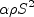 (using the paper's notation).
Instead, it should have read
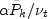 (again using the paper's notation).
In this expression, the Pk term
has a tilde over it, which refers to the limited value of the k production term
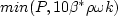. See below.
The main change is in the definition of eddy viscosity, which uses the strain invariant rather than magnitude
of vorticity in its definition:
where
Another minor difference from (SST) is that the production limiter is used
for both k and omega equations, and the constant is changed from 20 to 10. In other words, P
in both the k and omega equations gets replaced by:
The definition of 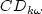 is slightly
different in that it uses 10-10 rather than 10-20 for its second term:
Finally, the definitions of two of the constants are slightly different:
The first is higher than the original constant definition
by approximately 0.43%, and the second is lower by less than 0.08%.
Note that if the vorticity form of the production term is used with this model, it should
be referred to as (SST-V2003).
When the
Menter SST
Two-Equation Model with Controlled Decay (SST-sust) and
(SST-sust-m)
This form of the SST model eliminates the non-physical decay of turbulence variables in the
freestream for external aerodynamic problems, through the addition of sustaining terms to the
equations. The reference is:
The equations are:
where everything except the last term in each equation is identical to the standard model
(SST). The recommended farfield boundary conditions are somewhat different:
Here, L is no longer the "approximate length of the computational domain,"
like it was for (SST), but rather the defining length scale for the particular
problem (usually associated with some feature or scale of the aerodynamic body of interest).
In the equations, 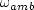 and
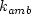 are taken to be
these farfield boundary values.
The extra terms have the effect of exactly
cancelling the destruction terms in the freestream when the turbulence levels are equal to the set ambient levels.
Inside the boundary layer, they are generally orders
of magnitude smaller than the destruction terms for reasonable freestream turbulence levels
(say, Tu = 1% or less), and therefore have little effect.
The farfield boundary condition
corresponds to a freestream Tu level of 0.08165%.
Note that applying the sustaining terms with the inflow values of k and omega that have been typical in
external aerodynamics (e.g., as used for the standard model (SST))
will not be effective. The reason is that these values have been adjusted to allow a
drastic decay before the fluid approaches the body.
When the
Menter SST
Two-Equation Model with Controlled Decay and Vorticity
Source Term (SST-Vsust) and (SST-Vsust-m)
This form of the SST model combines (SST-V) and (SST-sust).
The model is identical to (SST-sust), with the exception that
the term P (in both equations) is approximated with the following:
For low-speed flows, the second term on the right hand side of this equation
is generally small compared to the first term. (For incompressible flows the second term is identically zero.)
A production limiter is still employed for the P term in the k-equation, as
described for (SST).
When the
Menter SST
Two-Equation Model with Rotation/Curvature Correction (SST-RC) and
(SST-RCm)
This rotation/curvature form of the SST model is the same as the "standard" version (SST), except that
the production term P in both equations gets multiplied by a function
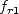, described below.
The reference for SST-RC is:
Although the above reference uses the naming convention "CC", here we use "RC" (rotation and
curvature) for consistency with the
SA-RC naming
convention already established.
The empirical function that multiplies the production term P in both the
All the variables and their derivatives are defined with respect to the reference frame of the
calculation, which may be rotating with rotation rate
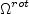. The remaining functions are
defined as:
The term 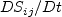 represents
the components of the Lagrangian derivative of the strain rate tensor. The
rotation rate is nonzero only if the
reference frame itself is rotating.
Note that if the RC correction
is added to a different base SST model, the naming of the model should reflect it. For example, if
adding RC to (SST-2003), the corrected model should be referred to as
(SST-2003RC). If adding RC to (SST-V), the corrected model should be
referred to as (SST-VRC).
When the
Menter SST
Two-Equation Model with Hellsten's Simplified Rotation/Curvature Correction (SST-RC-Hellsten)
and (SST-RC-Hellsten-m)
This simplified rotation/curvature form of the SST model is the same as the "standard" version (SST), except that
the destruction term in the
The references for SST-RC-Hellsten are:
The latter reference discovered that a different value of the constant
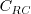 worked better than the value reported in
the first reference, so this newer value is used here.
In the original model, replace the Note that if the RC-Hellsten correction
is added to a different base SST model, the naming of the model should reflect it. For example, if
adding RC-Hellsten to (SST-2003), the corrected model should be referred to as
(SST-2003RC-Hellsten). If adding RC-Hellsten to (SST-V), the corrected model should be
referred to as (SST-VRC-Hellsten).
When the
Special notes for users of
OpenFOAM.
Return to: Turbulence Modeling Resource Home Page
Recent significant updates:

 )
and the expression
for turbulent eddy viscosity are different.
The two-equation model (written in conservation form) is given by the following:
)
and the expression
for turbulent eddy viscosity are different.
The two-equation model (written in conservation form) is given by the following:
![\frac{\partial (\rho k)}{\partial t} + \frac{\partial (\rho u_j k)}{\partial x_j}
= \cal P - \beta^* \rho \omega k + \frac{\partial}{\partial x_j}
\left[\left(\mu + \sigma_k \mu_t \right)\frac{\partial k}{\partial x_j}\right]](sst_eqns/img2.png)
![\frac{\partial (\rho \omega)}{\partial t} + \frac{\partial (\rho u_j \omega)}{\partial x_j}
= \frac{\gamma}{\nu_t} \cal P -
\beta \rho \omega^2 + \frac{\partial}{\partial x_j}
\left[ \left( \mu + \sigma_{\omega} \mu_t \right)
\frac{\partial \omega}{\partial x_j} \right] +
2(1-F_1) \frac{\rho \sigma_{\omega 2}}{\omega} \frac{\partial k}{\partial x_j}
\frac{\partial \omega}{\partial x_j}](sst_eqns/img3.png)


 represents constant 1
and
represents constant 1
and  represents constant 2.
Additional functions are given by:
represents constant 2.
Additional functions are given by:

![{\rm arg}_1 = {\rm min} \left[ {\rm max} \left( \frac{\sqrt{k}}{\beta^*\omega d},
\frac{500 \nu}{d^2 \omega} \right) , \frac{4 \rho \sigma_{\omega 2} k}{{\rm CD}_{k \omega} d^2} \right]](sst_eqns/img12.png)

 is the density,
is the density,
 is the
turbulent kinematic viscosity,
is the
turbulent kinematic viscosity,
 is the
molecular dynamic viscosity, d is the distance from the field point to the nearest wall, and
is the
molecular dynamic viscosity, d is the distance from the field point to the nearest wall, and
 is the vorticity magnitude, with
is the vorticity magnitude, with


 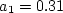
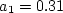 term
in the Boussinesq approximation for tau_ij is sometimes ignored in the momentum and energy equations.
Similarly, the production term in two-equation turbulence models is often approximated by P = mu_t S2.
This expression is exact for incompressible flows and is typically
considered a very good approximation, except perhaps for very high Mach number flows (see items 4 and 7 on the page
Notes on Running the Cases with CFD, and the
Implementing Turbulence Models into the Compressible RANS Equations page).
There are various ways that these approximations can be implemented:
term
in the Boussinesq approximation for tau_ij is sometimes ignored in the momentum and energy equations.
Similarly, the production term in two-equation turbulence models is often approximated by P = mu_t S2.
This expression is exact for incompressible flows and is typically
considered a very good approximation, except perhaps for very high Mach number flows (see items 4 and 7 on the page
Notes on Running the Cases with CFD, and the
Implementing Turbulence Models into the Compressible RANS Equations page).
There are various ways that these approximations can be implemented:
term is IGNORED in tau_ij in the momentum and energy equations, and the production term is APPROXIMATED by
P = mu_t S2.
term is INCLUDED in tau_ij in the momentum and energy equations, and the production term is APPROXIMATED by
P = mu_t S2.
term is IGNORED in tau_ij in the momentum and energy equations, and the production term is THE EXACT expression.
is usually readily available in
most Navier-Stokes codes. Furthermore, the vorticity source term is often nearly identical to the exact source
term in simple boundary layer flows, and the use of the vorticity term can avoid some numerical difficulties
sometimes associated with the use of the exact source term.
The reference for this usage is:
 term is ignored in tau_ij in the momentum and energy equations and the production term is approximated by
P = mu_t*(Omega2),
a modified naming convention should be employed: (SST-Vm).
term is ignored in tau_ij in the momentum and energy equations and the production term is approximated by
P = mu_t*(Omega2),
a modified naming convention should be employed: (SST-Vm).
 instead of
instead of
 . Implementation of the Kato-Launder
correction would be called (SST-KL).
If the
term is ignored in tau_ij in the momentum and energy equations and
if the
. Implementation of the Kato-Launder
correction would be called (SST-KL).
If the
term is ignored in tau_ij in the momentum and energy equations and
if the  term in P is ignored, then the naming convention is (SST-KLm).
term in P is ignored, then the naming convention is (SST-KLm).
 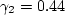
term is ignored in tau_ij in the momentum and energy equations and the production term is approximated by
P = mu_t S2,
a modified naming convention should be used: (SST-2003m).
Other variants (s and e) follow the naming conventions described above at the end of the SST section.
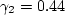
term is ignored in tau_ij in the momentum and energy equations and the production term is approximated by
P = mu_t S2,
a modified naming convention should be used: (SST-2003m).
Other variants (s and e) follow the naming conventions described above at the end of the SST section.

term is ignored in tau_ij in the momentum and energy equations and the production term is approximated by
P = mu_t S2,
a modified naming convention should be used: (SST-sust-m).
Other variants (s and e) follow the naming conventions described above at the end of the SST section.
term is ignored in tau_ij in the momentum and energy equations and the production term is approximated by
P = mu_t*(Omega2),
a modified naming convention should be employed: (SST-Vsust-m).
 and
and
 equations is:
equations is:
where

term is ignored in tau_ij in the momentum and energy equations and the production term is approximated by
P = mu_t S2,
a modified naming convention should be used: (SST-RCm).
Other variants (s and e) follow the naming conventions described above at the end of the SST section.
 equation gets multiplied by the function F4,
described below.
equation gets multiplied by the function F4,
described below.
equation destruction term:
with
where


term is ignored in tau_ij in the momentum and energy equations and the production term is approximated by
P = mu_t S2,
a modified naming convention should be used: (SST-RC-Hellsten-m).
Other variants (s and e) follow the naming conventions described above at the end of the SST section.
10/04/2024 - added "s" and "e" variant definitions
03/24/2021 - clarifications on use of "m" designation when P=mu_t S2 and k term ignored in momentum and energy equations
12/19/2020 - added an additional note regarding inflow values for SST-sust
8/28/2020 - delineate the SST-Vm modification to SST-V
6/30/2015 - mention Pr, Pr_t, and Sutherland's law
8/29/2013 - mention of Kato-Launder correction
7/08/2013 - added SST-RC-Hellsten
Page Curators: Christopher Rumsey,
Ethan Vogel,
Clark Pederson
Last Updated: 10/04/2024